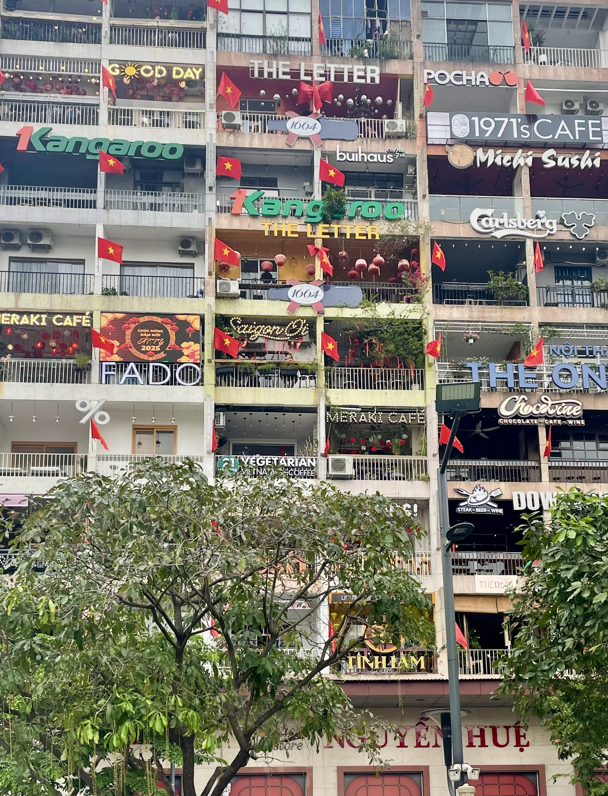
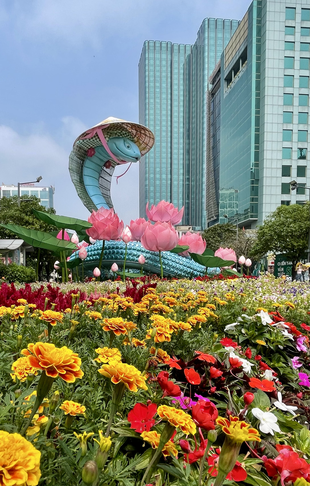
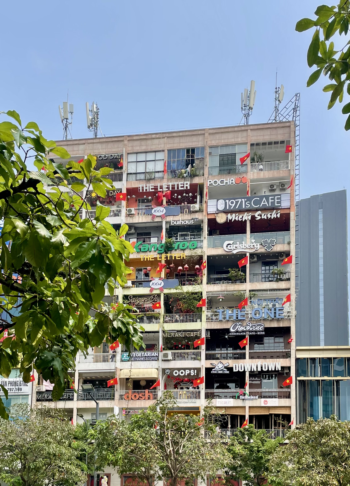
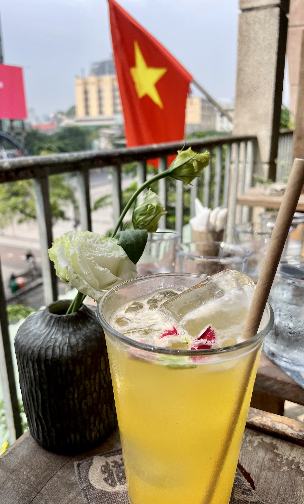
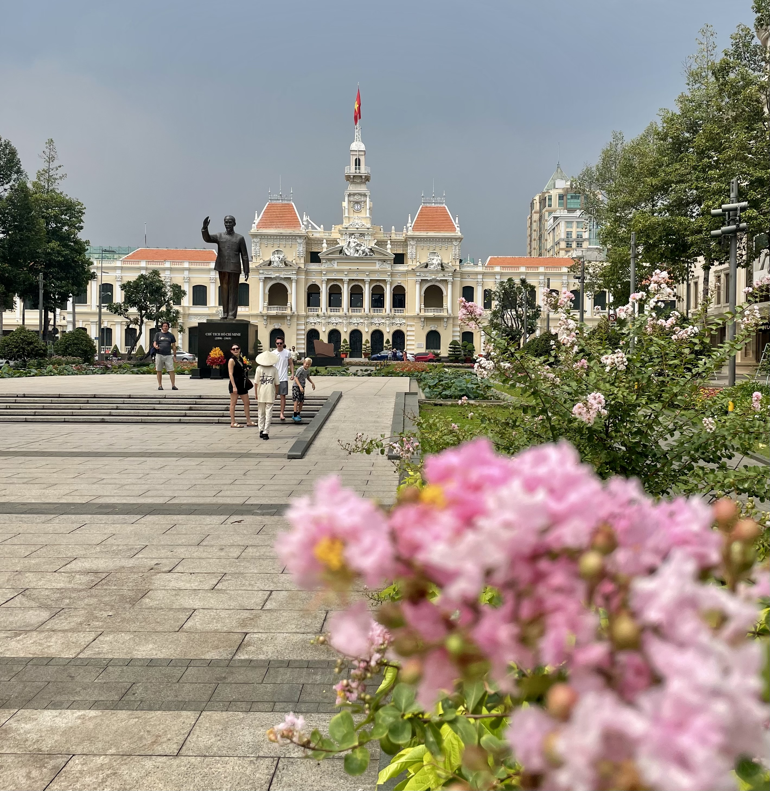
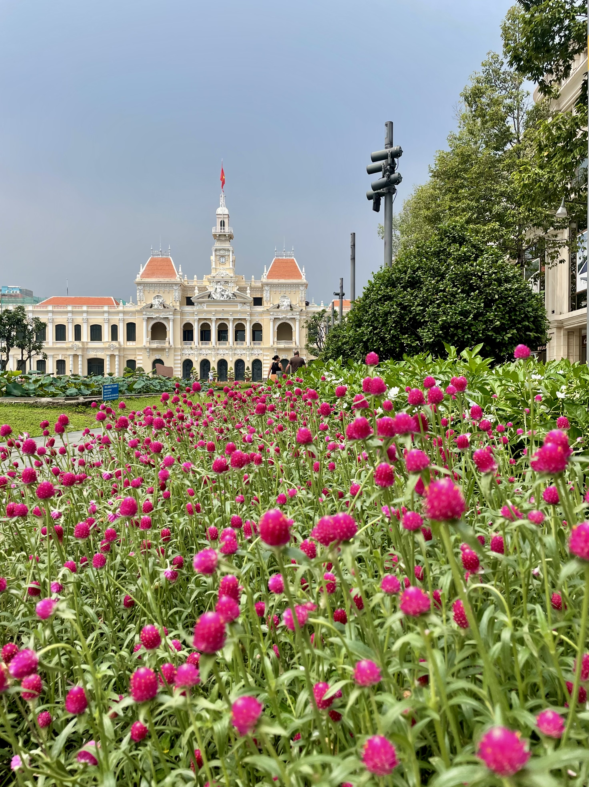
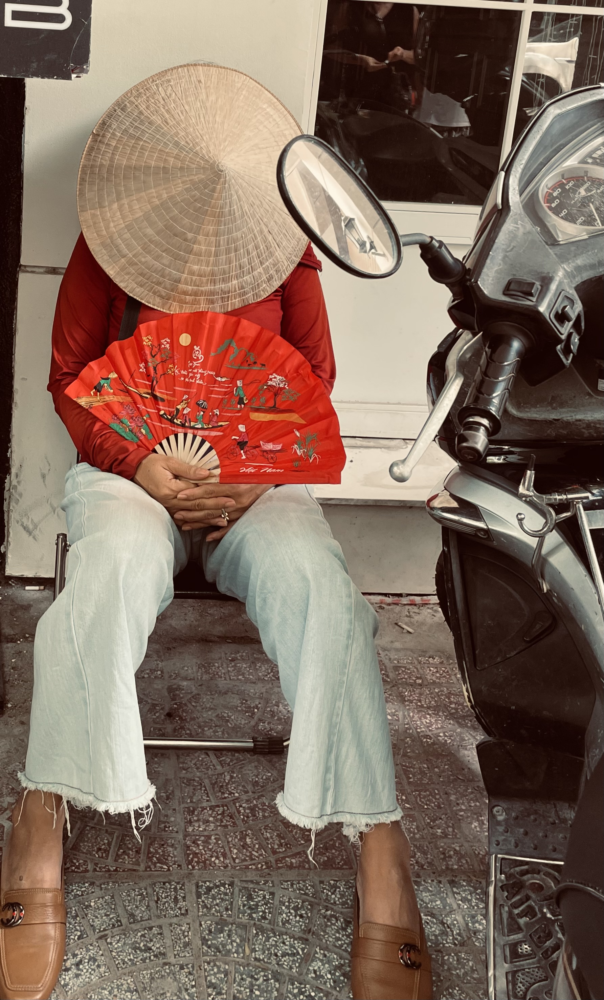
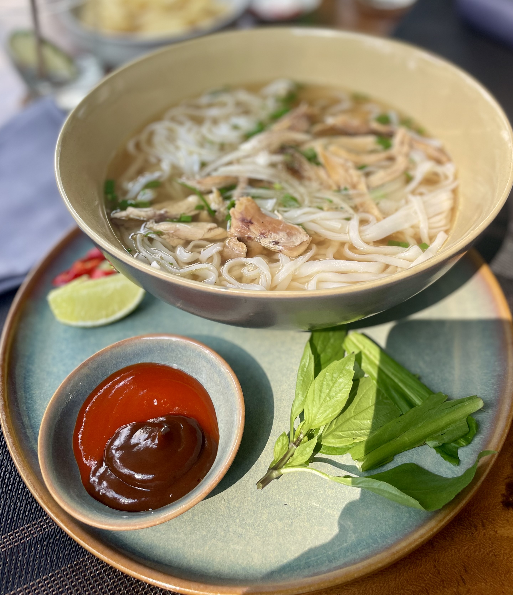

District 1
The place we kept coming back to for shopping, restaurants, cafés and the sheer energy of the city.
We spent a weekend exploring Ho Chi Minh City on foot, moving between its different districts and getting a feel for the energy that makes Saigon so addictive. From the grand old Central Post Office and Independence Palace to the buzzing streets of District 1, every corner seemed to offer something different.
Evenings belonged to Nguyen Hue Walking Street, while street food, shopping and the extraordinary choreography of the city's endless stream of motorbikes kept us moving.








Walk, eat, shop and explore without needing a packed itinerary.
Busy streets, incredible traffic and an energy that continues well into the evening.
A great starting point for shopping, food, landmarks and exploring the city on foot.
The place we kept coming back to for shopping, restaurants, cafés and the sheer energy of the city.
One of the city's great architectural landmarks and an easy stop while exploring the centre.
A fascinating glimpse into Vietnam's modern history and one of the city's most recognisable landmarks.
Best enjoyed after dark, when the crowds gather and the city really comes alive.
Superb, varied and seemingly everywhere. Some of our favourite moments came from simply stopping to eat.
The best way we found to experience the contrast between the districts, architecture, shops, food and street life.
There is something about Ho Chi Minh City that makes you want to keep walking. We spent the weekend moving through the city without trying to see everything, discovering different districts, stopping for food and following the streets wherever they took us.
The Central Post Office and Independence Palace gave us a glimpse of the city's history, while District 1 delivered the shopping, restaurants and energy we loved.
As evening arrived, Nguyen Hue became a favourite, with the crowds gathering and the city buzzing around us. And then there was the traffic — an incredible stream of bikes that somehow seems chaotic and perfectly choreographed at the same time.
Vietnam's endlessly energetic southern city, where historic landmarks, buzzing districts, incredible street food and a seemingly endless stream of motorbikes come together.